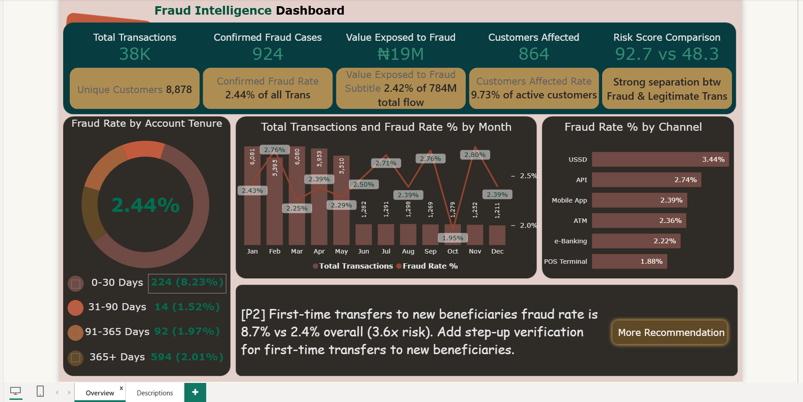
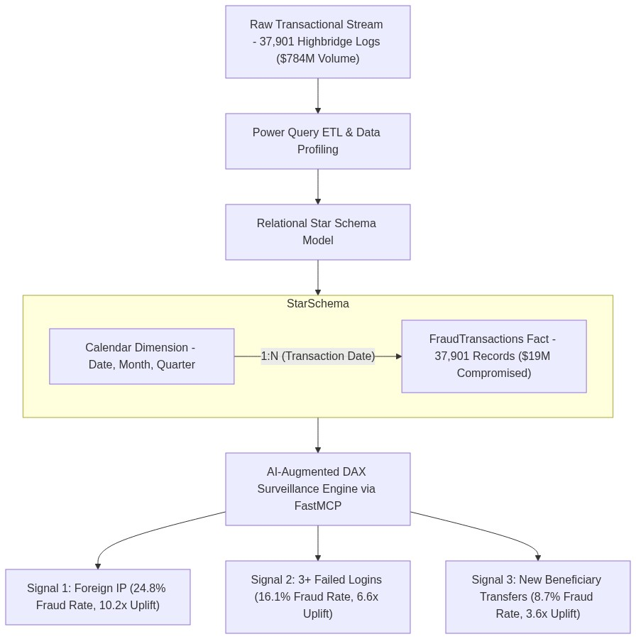

Financial Fraud Behavioral Risk & Anomaly Intelligence
Enterprise fraud surveillance platform analyzing 37,901 financial transactions totaling ₦784 Million in volume across 8,878 accounts. Engineered an in-memory Star Schema model augmented with Claude AI via Power BI FastMCP Server, isolating 10.2× risk uplifts in foreign IP sessions and structuring a prioritized P1 / P2 / P3 control framework to safeguard exposed capital.
Direct monetary volume compromised across 924 confirmed attacks.
Baseline institutional incident frequency across 37,901 transactions.
Foreign IP accounts show a 24.8% fraud rate vs 2.44% domestic baseline.
Average 92.7 Fraud Risk score vs 48.3 Legitimate score (+44.4 pts separation).
Executive Power BI Surveillance Cockpit
Automated 5.0-second rotation cycling through the Executive Monitoring Cockpit and Prioritized P1/P2/P3 Governance.

Out of 37,901 transactions totaling ₦784M, the platform flagged 924 confirmed attacks compromising ₦19M (2.42% of volume). Real-time channel analysis reveals direct fund transfers account for 47.9% of all fraud incidents, representing the primary cash-out rail.
Empirical Risk Signals & Statistical Uplift Multipliers
Granular comparison of baseline institutional transaction rates (2.44%) against elevated behavioral attributes, identifying precise threat attack vectors.
| Risk Signal Attribute | Observed Fraud Rate | Baseline Rate | Statistical Uplift | Operational Fraud Mechanism |
|---|---|---|---|---|
| 🌐 Foreign IP Activity | 24.8% | 2.44% | 10.2× Uplift | Cross-border proxy/VPN credential stuffing bypasses geolocation checks. |
| 🔑 3+ Failed Login Attempts | 16.1% | 2.44% | 6.6× Uplift | Automated brute-force password spraying preceding account takeover. |
| 👤 First-Time Beneficiary Transfers | 8.7% | 2.44% | 3.6× Uplift | Rapid outbound liquidation directly to newly created third-party mule accounts. |
| ⏳ New Accounts (< 30 Days Old) | 8.2% | 2.44% | 3.4× Uplift | Synthetic identity creation and fast-exit accounts opened with forged KYC. |
| 📱 USSD Payment Channel | 3.44% | 2.44% | 1.4× Uplift | Unencrypted telecom channel vulnerability exploited via social engineering & SIM-swaps. |
Relational Star Schema & Claude FastMCP Surveillance Flow
High-performance analytics pipeline coupling a 37,901-row transactional fact table with an in-memory Calendar dimension and programmatically validated via FastMCP AI.

Transactional Ingestion
Ingests 37,901 Highbridge banking logs totaling ₦784M gross transactional flow across mobile, POS, USSD, and web channels.
Power Query Cleansing
Normalizes transaction timestamps, validates IP geolocation formats, classifies account tenure tiers, and establishes clean binary fraud flags.
Star Schema Modeling
Connects FraudTransactions fact table via 1:N relationship to an in-memory DAX Calendar dimension table.
FastMCP AI Validation
Augments Power BI with Claude AI FastMCP Server for automated DAX syntax verification, anomaly hypothesis generation, and P1/P2/P3 rule synthesis.
High-Performance Surveillance DAX Measures
DAX calculations engineered for low-latency in-memory query processing, dynamic risk separation scoring, and monetary exposure evaluation.
Confirmed Fraud Cases =
CALCULATE(
COUNTROWS(FraudTransactions),
FraudTransactions[is_fraud] = TRUE()
)
Confirmed Fraud Rate =
DIVIDE([Confirmed Fraud Cases], [Total Transactions])Computes verified malicious actions (924 cases) against the 37,901 transaction baseline (2.44% baseline incidence).
Value Exposed to Fraud =
CALCULATE(
SUM(FraudTransactions[transaction_amount_ngn]),
FraudTransactions[is_fraud] = TRUE()
)
Value Exposed Rate =
DIVIDE([Value Exposed to Fraud], [Total Transaction Volume])Measures exact currency compromised (₦19,000,000) representing 2.42% of total transactional liquidity.
Risk Separation Label =
VAR FraudScore = CALCULATE(
AVERAGE(FraudTransactions[risk_score]),
FraudTransactions[is_fraud] = TRUE()
)
VAR LegitScore = CALCULATE(
AVERAGE(FraudTransactions[risk_score]),
FraudTransactions[is_fraud] = FALSE()
)
VAR Diff = ABS(FraudScore - LegitScore)
RETURN
SWITCH(
TRUE(),
Diff >= 20, "Strong separation (" & FORMAT(Diff, "0.0") & " pts)",
Diff >= 10, "Moderate separation",
"Weak separation"
)Validates predictive separation: 92.7 Fraud vs 48.3 Legitimate (+44.4 points delta) earns "Strong separation" status.
Foreign IP Risk Uplift =
VAR ForeignFraudRate = CALCULATE(
[Confirmed Fraud Rate],
FraudTransactions[is_foreign_ip] = TRUE()
)
VAR BaselineRate = [Confirmed Fraud Rate]
RETURN
DIVIDE(ForeignFraudRate, BaselineRate)
-- Output: 10.16x (Formatted as 10.2x Uplift)Dynamically recalculates threat multipliers as transactional streams filter across geographic and channel slices.
Prioritized Operational Controls (P1 / P2 / P3 Matrix)
Actionable management framework directly mapping statistical risk uplifts into concrete engineering safeguards and business policy enforcements.
Automated Defense Enforcements
- Mandatory Step-Up MFA for Foreign IPs: Enforce biometric or hardware token verification for all non-domestic sessions (10.2× risk uplift).
- Brute-Force Rate Limiting: Auto-lock transaction sessions after 3 failed login attempts (6.6× risk uplift).
- Direct Transfer Throttles: Implement stepped holds on consecutive outbound transfers (accounts for 47.9% of all fraud).
Account Velocity & Beneficiary Rules
- First-Time Beneficiary Cooling: Enforce a 2-hour delay on outbound transfers to newly registered payees (3.6× risk uplift).
- New Account Velocity Caps: Restrict daily withdrawal thresholds on accounts < 30 days old (3.4× risk uplift) until identity seasoning.
- Mule Account Graph Analysis: Deploy heuristic graph mapping to identify shared beneficiary clusters across synthetic IDs.
USSD & Telco Modernization
- Real-Time SIM-Swap APIs: Query telecom operator APIs during USSD transactions to flag recently swapped SIM cards (1.4× uplift).
- Location Triangulation: Check cell tower location proximity against registered billing address for high-value mobile transfers.
- Continuous FastMCP Tuning: Run weekly AI model auditing via FastMCP server to identify newly emerging behavioral patterns.